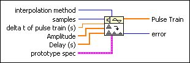

Pulse Train VI
Owning Palette: Signal Generation VIs
Requires: Full Development System
Generates an array that concatenates a series of pulses according to the Prototype Pulse. This VI constructs the Pulse Train output by the specified interpolation method.

 Add to the block diagram Add to the block diagram |
 Find on the palette Find on the palette |